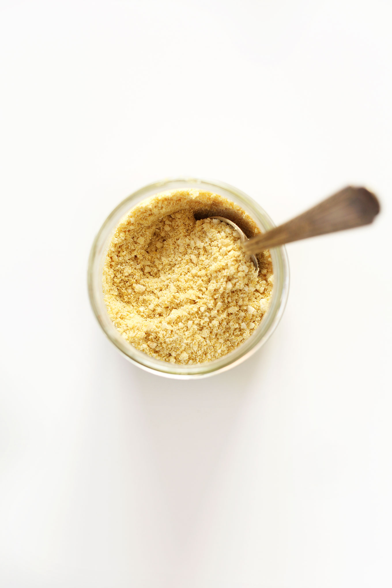

Vegan Parmesan

Description
Easy, 4-ingredient vegan parmesan cheese that's perfect on top of pastas, pizza,
and anywhere you'd usually use parmesan cheese!
Ingredients
- 3/4 cup raw cashews
- 3 Tbsp nutritional yeast
- 3/4 tsp sea salt
- 1/4 tsp garlic powder
Instructions
- Add all ingredients to a food processor and mix/pulse until a fine meal is achieved.
Store in the refrigerator to keep fresh. Lasts for several weeks.
- I love vegan parmesan on top of chilaquiles, vegan pizza, breadsticks, pastas and gratins. It's also a great addition to vegan meatballs and can be converted into mexican cheese 3 ways!